Benchmark Structure Prediction Methods
[1]:
import collections
import itertools
import IPython.display as ipy_display
import matplotlib.pyplot as plt
import numpy as np
import pandas as pd
import pingouin as pg
import seaborn as sns
from matplotlib.axes import Axes
from matplotlib.ticker import PercentFormatter
from scipy import stats
from sklearn.metrics import auc, precision_recall_curve, roc_auc_score
[2]:
sequences = pd.read_csv('../data/interim/sequences_sample_1500.csv', index_col='index')
sequences['fold'] = sequences['fold'].astype(str)
Antigen Specificity
[3]:
def calculate_performance(pae_scores: pd.Series, labels: pd.Series) -> pd.Series:
roc_auc = 1 - roc_auc_score(labels, pae_scores)
roc_auc01 = 1 - roc_auc_score(labels, pae_scores, max_fpr=0.1)
precision, recall, _ = precision_recall_curve(labels, pae_scores)
pr_auc = 1 - auc(recall, precision)
return pd.Series({'roc_auc': roc_auc, 'roc_auc_01': roc_auc01, 'pr_auc': pr_auc})
def format_metric_name(metric_name: str) -> str:
return metric_name.upper().replace('_01', ' 0.1').replace('_', '-')
[4]:
af3_confidence_scores = pd.read_csv('../data/interim/confidence_scores_af3_af3_tcrmodel2_3_recycles_1500.csv')
af3_confidence_scores['model'] = 'AlphaFold 3'
[5]:
af3_confidence_scores['top_rank'] = False
af3_confidence_scores.loc[af3_confidence_scores.groupby('name')['ranking_score'].idxmax(), 'top_rank'] = True
[6]:
boltz_confidence_scores = pd.read_csv('../data/interim/confidence_scores_boltz_af3_tcrmodel2_1500.csv')
boltz_confidence_scores['model'] = 'Boltz-2'
[7]:
boltz_confidence_scores['top_rank'] = False
boltz_confidence_scores.loc[boltz_confidence_scores.groupby('name')['confidence_score'].idxmax(), 'top_rank'] = True
[8]:
chai_confidence_scores = pd.read_csv('../data/interim/confidence_scores_chai_af3_tcrmodel2_1500.csv')
chai_confidence_scores['model'] = 'Chai-1'
[9]:
chai_confidence_scores['top_rank'] = False
chai_confidence_scores.loc[chai_confidence_scores.groupby('name')['aggregate_score'].idxmax(), 'top_rank'] = True
[10]:
af2_confidence_scores = pd.read_csv('../data/interim/confidence_scores_af2_af3_tcrmodel2_1500.csv')
af2_confidence_scores['model'] = 'AlphaFold 2'
[11]:
af2_confidence_scores['top_rank'] = False
af2_confidence_scores.loc[af2_confidence_scores.groupby('name')['ranking_confidence'].idxmax(), 'top_rank'] = True
[12]:
confidence_scores = pd.concat(
[af3_confidence_scores, boltz_confidence_scores, chai_confidence_scores, af2_confidence_scores]
).reset_index(drop=True)
[13]:
confidence_scores = confidence_scores.merge(sequences, how='left', left_on='name', right_index=True)
Overall
[14]:
metric_scores = confidence_scores.groupby('model').apply(
lambda group: calculate_performance(group['cdr_pmhc_pae_score'], group['label']), include_groups=False
)
metric_scores_top_rank = (
confidence_scores.query('top_rank')
.groupby('model')
.apply(lambda group: calculate_performance(group['cdr_pmhc_pae_score'], group['label']), include_groups=False)
)
print('All')
ipy_display.display(metric_scores)
print()
print('Top Ranked')
ipy_display.display(metric_scores_top_rank)
All
| roc_auc | roc_auc_01 | pr_auc | |
|---|---|---|---|
| model | |||
| AlphaFold 2 | 0.550476 | 0.507572 | 0.535067 |
| AlphaFold 3 | 0.601772 | 0.504012 | 0.553651 |
| Boltz-2 | 0.562251 | 0.513222 | 0.549348 |
| Chai-1 | 0.612472 | 0.509811 | 0.568085 |
Top Ranked
| roc_auc | roc_auc_01 | pr_auc | |
|---|---|---|---|
| model | |||
| AlphaFold 2 | 0.541764 | 0.499949 | 0.516920 |
| AlphaFold 3 | 0.601243 | 0.501511 | 0.550686 |
| Boltz-2 | 0.549703 | 0.517361 | 0.547792 |
| Chai-1 | 0.610727 | 0.510232 | 0.566772 |
Bootstrap
[15]:
NUM_SAMPLES = 25
SAMPLE_SIZE = 500
names = confidence_scores['name'].unique()
rng = np.random.default_rng(123)
samples_metric_scores = []
samples_metric_scores_top_rank = []
for sample_num in range(1, NUM_SAMPLES + 1):
sample_names = rng.choice(names, SAMPLE_SIZE)
sample = confidence_scores[confidence_scores['name'].isin(sample_names)]
sample_metric_scores = (
sample.groupby('model')
.apply(lambda group: calculate_performance(group['cdr_pmhc_pae_score'], group['label']), include_groups=False)
.reset_index()
)
sample_metric_scores['sample_num'] = sample_num
samples_metric_scores.append(sample_metric_scores)
sample_metric_scores_top_rank = (
sample.query('top_rank')
.groupby('model')
.apply(lambda group: calculate_performance(group['cdr_pmhc_pae_score'], group['label']), include_groups=False)
.reset_index()
)
sample_metric_scores_top_rank['sample_num'] = sample_num
samples_metric_scores_top_rank.append(sample_metric_scores_top_rank)
samples_metric_scores = pd.concat(samples_metric_scores).reset_index(drop=True)
samples_metric_scores_top_rank = pd.concat(samples_metric_scores_top_rank).reset_index(drop=True)
[ ]:
for metric_name in ('roc_auc', 'roc_auc_01', 'pr_auc'):
fig, axes = plt.subplots(1, 2, figsize=(10, 5))
fig.suptitle('Structure Prediction Methods Antigen Specificity (Bootstrapped)')
for i, (ax, title, data) in enumerate(
zip(axes, ('All', 'Top Ranked'), (samples_metric_scores, samples_metric_scores_top_rank), strict=True)
):
sns.stripplot(
data,
x='model',
y=metric_name,
color='grey',
zorder=1,
marker='o',
size=4,
edgecolor='black',
linewidth=1,
alpha=0.70,
ax=ax,
)
sns.boxplot(data, x='model', y=metric_name, boxprops={'alpha': 0.85}, showfliers=False, ax=ax)
ax.axhline(0.5, color='r', linestyle='dashed')
ax.set_title(title)
ax.set_xlabel('')
ax.set_ylim(0.45, 0.7)
if i == 0:
ax.set_ylabel(format_metric_name(metric_name))
else:
ax.set_ylabel('')
plt.show()
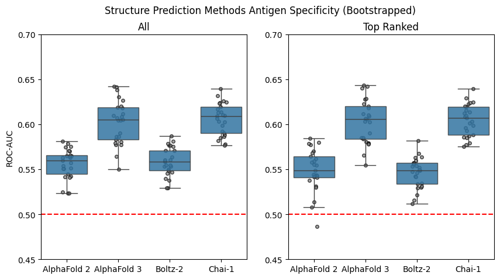
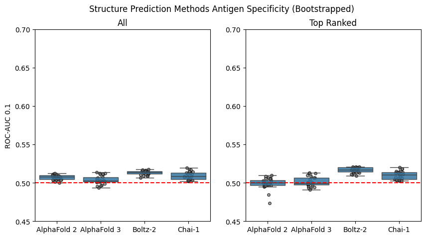
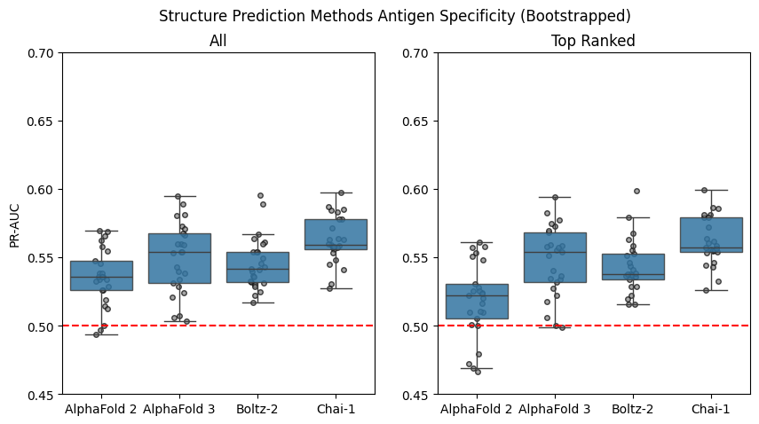
[17]:
sns.FacetGrid(
samples_metric_scores.melt(
id_vars=['model', 'sample_num'],
value_vars=['roc_auc', 'roc_auc_01', 'pr_auc'],
var_name='metric_name',
value_name='score',
),
col='model',
row='metric_name',
sharex=False,
).map(sns.histplot, 'score')
sns.FacetGrid(
samples_metric_scores_top_rank.melt(
id_vars=['model', 'sample_num'],
value_vars=['roc_auc', 'roc_auc_01', 'pr_auc'],
var_name='metric_name',
value_name='score',
),
col='model',
row='metric_name',
sharex=False,
).map(sns.histplot, 'score')
plt.show()
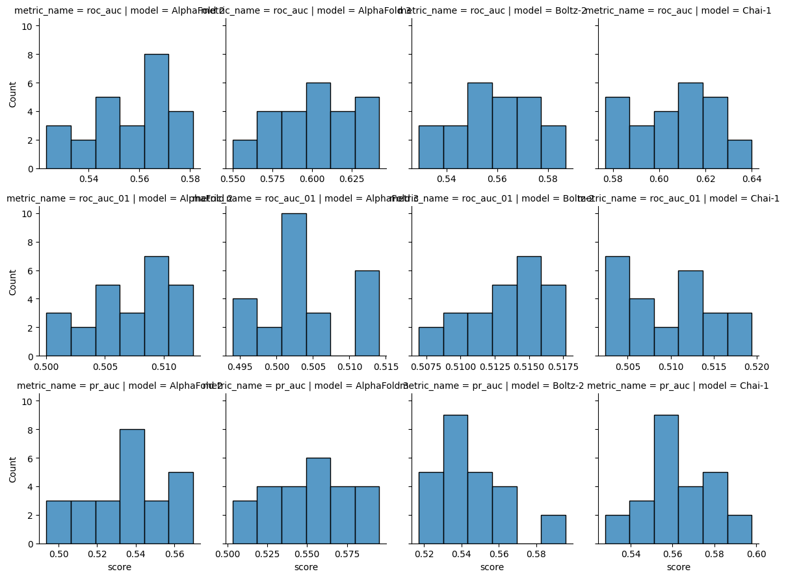
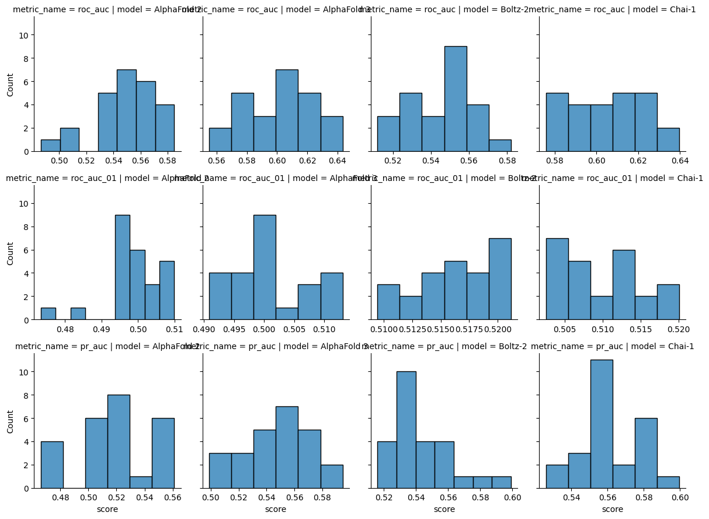
[18]:
def statistics_normal(data: pd.DataFrame, metric_name: str) -> tuple[pd.DataFrame, pd.DataFrame]:
overall = pg.anova(data, dv=metric_name, between='model')
groups = list(data.groupby('model')[metric_name])
significance_level = 0.05 / len(groups)
post_hoc = collections.defaultdict(list)
for (group1_name, group1), (group2_name, group2) in itertools.combinations(groups, 2):
stat, p_val = stats.ttest_ind(group1, group2, alternative='two-sided')
post_hoc['group1'].append(group1_name)
post_hoc['group2'].append(group2_name)
post_hoc['stat'].append(stat)
post_hoc['p_val'].append(p_val)
post_hoc['signficant'].append(p_val < significance_level)
return overall, pd.DataFrame(post_hoc)
[19]:
for metric_name in ('roc_auc', 'roc_auc_01', 'pr_auc'):
print(format_metric_name(metric_name))
for title, data in zip(('All', 'Top Ranked'), (samples_metric_scores, samples_metric_scores_top_rank), strict=True):
print(title)
overall, post_hoc = statistics_normal(data, metric_name)
ipy_display.display(overall)
ipy_display.display(post_hoc)
print()
ROC-AUC
All
| Source | ddof1 | ddof2 | F | p-unc | np2 | |
|---|---|---|---|---|---|---|
| 0 | model | 3 | 96 | 51.230866 | 7.368149e-20 | 0.615527 |
| group1 | group2 | stat | p_val | signficant | |
|---|---|---|---|---|---|
| 0 | AlphaFold 2 | AlphaFold 3 | -7.850718 | 3.704384e-10 | True |
| 1 | AlphaFold 2 | Boltz-2 | -0.534188 | 5.956769e-01 | False |
| 2 | AlphaFold 2 | Chai-1 | -10.258394 | 1.091441e-13 | True |
| 3 | AlphaFold 3 | Boltz-2 | 7.550341 | 1.059618e-09 | True |
| 4 | AlphaFold 3 | Chai-1 | -0.578870 | 5.653834e-01 | False |
| 5 | Boltz-2 | Chai-1 | -9.978345 | 2.719076e-13 | True |
Top Ranked
| Source | ddof1 | ddof2 | F | p-unc | np2 | |
|---|---|---|---|---|---|---|
| 0 | model | 3 | 96 | 61.011712 | 3.669285e-22 | 0.655957 |
| group1 | group2 | stat | p_val | signficant | |
|---|---|---|---|---|---|
| 0 | AlphaFold 2 | AlphaFold 3 | -7.989040 | 2.287695e-10 | True |
| 1 | AlphaFold 2 | Boltz-2 | 0.505228 | 6.157111e-01 | False |
| 2 | AlphaFold 2 | Chai-1 | -9.491874 | 1.357527e-12 | True |
| 3 | AlphaFold 3 | Boltz-2 | 9.622953 | 8.778060e-13 | True |
| 4 | AlphaFold 3 | Chai-1 | -0.302244 | 7.637716e-01 | False |
| 5 | Boltz-2 | Chai-1 | -12.019264 | 4.405373e-16 | True |
ROC-AUC 0.1
All
| Source | ddof1 | ddof2 | F | p-unc | np2 | |
|---|---|---|---|---|---|---|
| 0 | model | 3 | 96 | 19.745956 | 4.735770e-10 | 0.381594 |
| group1 | group2 | stat | p_val | signficant | |
|---|---|---|---|---|---|
| 0 | AlphaFold 2 | AlphaFold 3 | 2.465324 | 1.731655e-02 | False |
| 1 | AlphaFold 2 | Boltz-2 | -6.860718 | 1.202409e-08 | True |
| 2 | AlphaFold 2 | Chai-1 | -1.906675 | 6.255824e-02 | False |
| 3 | AlphaFold 3 | Boltz-2 | -7.419027 | 1.680301e-09 | True |
| 4 | AlphaFold 3 | Chai-1 | -3.686488 | 5.781421e-04 | True |
| 5 | Boltz-2 | Chai-1 | 3.151456 | 2.797616e-03 | True |
Top Ranked
| Source | ddof1 | ddof2 | F | p-unc | np2 | |
|---|---|---|---|---|---|---|
| 0 | model | 3 | 96 | 46.1604 | 1.475574e-18 | 0.590586 |
| group1 | group2 | stat | p_val | signficant | |
|---|---|---|---|---|---|
| 0 | AlphaFold 2 | AlphaFold 3 | -1.004386 | 3.202291e-01 | False |
| 1 | AlphaFold 2 | Boltz-2 | -10.390389 | 7.122124e-14 | True |
| 2 | AlphaFold 2 | Chai-1 | -5.792447 | 5.194512e-07 | True |
| 3 | AlphaFold 3 | Boltz-2 | -10.521408 | 4.672215e-14 | True |
| 4 | AlphaFold 3 | Chai-1 | -5.244527 | 3.488531e-06 | True |
| 5 | Boltz-2 | Chai-1 | 5.052876 | 6.731424e-06 | True |
PR-AUC
All
| Source | ddof1 | ddof2 | F | p-unc | np2 | |
|---|---|---|---|---|---|---|
| 0 | model | 3 | 96 | 7.184585 | 0.000211 | 0.183352 |
| group1 | group2 | stat | p_val | signficant | |
|---|---|---|---|---|---|
| 0 | AlphaFold 2 | AlphaFold 3 | -2.190229 | 0.033398 | False |
| 1 | AlphaFold 2 | Boltz-2 | -1.912543 | 0.061784 | False |
| 2 | AlphaFold 2 | Chai-1 | -4.999415 | 0.000008 | True |
| 3 | AlphaFold 3 | Boltz-2 | 0.573698 | 0.568851 | False |
| 4 | AlphaFold 3 | Chai-1 | -2.064283 | 0.044418 | False |
| 5 | Boltz-2 | Chai-1 | -3.193491 | 0.002483 | True |
Top Ranked
| Source | ddof1 | ddof2 | F | p-unc | np2 | |
|---|---|---|---|---|---|---|
| 0 | model | 3 | 96 | 14.96277 | 4.573872e-08 | 0.318609 |
| group1 | group2 | stat | p_val | signficant | |
|---|---|---|---|---|---|
| 0 | AlphaFold 2 | AlphaFold 3 | -3.760805 | 4.602434e-04 | True |
| 1 | AlphaFold 2 | Boltz-2 | -3.612714 | 7.235546e-04 | True |
| 2 | AlphaFold 2 | Chai-1 | -6.561447 | 3.461497e-08 | True |
| 3 | AlphaFold 3 | Boltz-2 | 0.625005 | 5.349280e-01 | False |
| 4 | AlphaFold 3 | Chai-1 | -2.300582 | 2.580357e-02 | False |
| 5 | Boltz-2 | Chai-1 | -3.516974 | 9.650614e-04 | True |
By Fold
[ ]:
roc_aucs_by_fold = (
confidence_scores.groupby(['model', 'fold'])
.apply(lambda group: calculate_performance(group['cdr_pmhc_pae_score'], group['label']), include_groups=False)
.reset_index()
)
roc_aucs_by_fold_top_rank = (
confidence_scores.query('top_rank')
.groupby(['model', 'fold'])
.apply(lambda group: calculate_performance(group['cdr_pmhc_pae_score'], group['label']), include_groups=False)
.reset_index()
)
for metric_name in ('roc_auc', 'roc_auc_01', 'pr_auc'):
fig, axes = plt.subplots(1, 2, figsize=(10, 5))
for i, (ax, title, data) in enumerate(
zip(axes, ('All', 'Top Ranked'), (roc_aucs_by_fold, roc_aucs_by_fold_top_rank), strict=True)
):
sns.pointplot(data, x='model', y=metric_name, hue='fold', ax=ax)
sns.boxplot(data, x='model', y=metric_name, boxprops={'alpha': 0.85}, ax=ax)
ax.axhline(0.5, color='r', linestyle='dashed')
ax.set_title(title)
ax.set_xlabel('')
handles, labels = ax.get_legend_handles_labels()
new_labels = [f'Fold {label}' for label in labels]
ax.legend(handles, new_labels)
if i == 0:
ax.set_ylabel(format_metric_name(metric_name))
else:
ax.set_ylabel('')
plt.show()
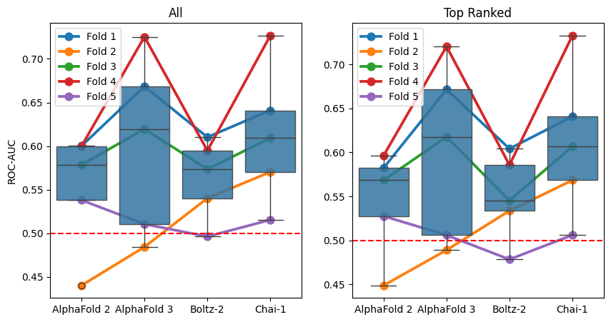
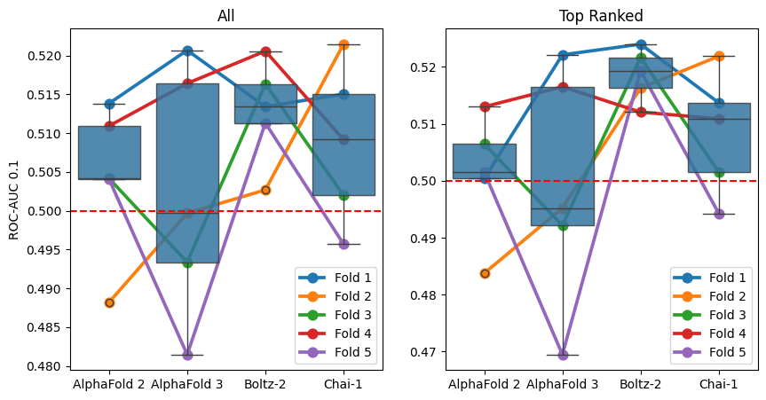
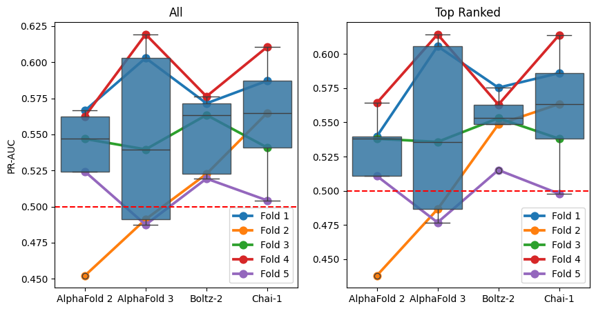
[21]:
sns.FacetGrid(
roc_aucs_by_fold.melt(
id_vars=['model', 'fold'],
value_vars=['roc_auc', 'roc_auc_01', 'pr_auc'],
var_name='metric_name',
value_name='score',
),
col='model',
row='metric_name',
sharex=False,
).map(sns.histplot, 'score')
sns.FacetGrid(
roc_aucs_by_fold_top_rank.melt(
id_vars=['model', 'fold'],
value_vars=['roc_auc', 'roc_auc_01', 'pr_auc'],
var_name='metric_name',
value_name='score',
),
col='model',
row='metric_name',
sharex=False,
).map(sns.histplot, 'score')
plt.show()
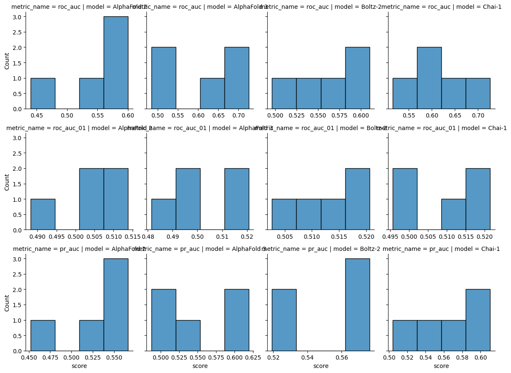
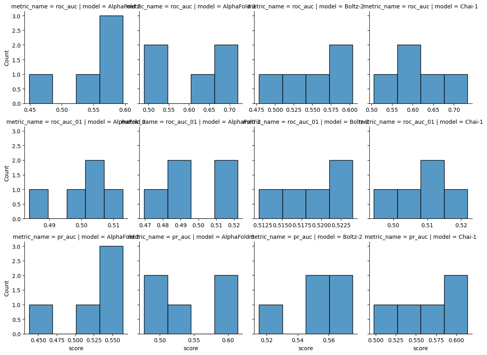
[22]:
def statistics_non_parametric(data: pd.DataFrame, metric_name: str) -> tuple[pd.DataFrame, pd.DataFrame]:
overall = pg.friedman(data, dv=metric_name, within='model', subject='fold', method='f')
groups = list(data.set_index('fold').groupby('model')[metric_name])
groups = [(group_name, group.sort_index()) for group_name, group in groups]
significance_level = 0.05 / len(groups)
post_hoc = collections.defaultdict(list)
for (group1_name, group1), (group2_name, group2) in itertools.combinations(groups, 2):
stat, p_val = stats.wilcoxon(group1, group2, alternative='greater')
post_hoc['group1'].append(group1_name)
post_hoc['group2'].append(group2_name)
post_hoc['stat'].append(stat)
post_hoc['p_val'].append(p_val)
post_hoc['signficant'].append(p_val < significance_level)
return overall, pd.DataFrame(post_hoc)
[23]:
for metric_name in ('roc_auc', 'roc_auc_01', 'pr_auc'):
print(format_metric_name(metric_name))
for title, data in zip(('All', 'Top Ranked'), (roc_aucs_by_fold, roc_aucs_by_fold_top_rank), strict=True):
print(title)
overall, post_hoc = statistics_non_parametric(data, metric_name)
ipy_display.display(overall)
ipy_display.display(post_hoc)
print()
print()
ROC-AUC
All
| Source | W | ddof1 | ddof2 | F | p-unc | |
|---|---|---|---|---|---|---|
| Friedman | model | 0.424 | 2.6 | 10.4 | 2.944444 | 0.088004 |
| group1 | group2 | stat | p_val | signficant | |
|---|---|---|---|---|---|
| 0 | AlphaFold 2 | AlphaFold 3 | 1.0 | 0.96875 | False |
| 1 | AlphaFold 2 | Boltz-2 | 7.0 | 0.59375 | False |
| 2 | AlphaFold 2 | Chai-1 | 1.0 | 0.96875 | False |
| 3 | AlphaFold 3 | Boltz-2 | 12.0 | 0.15625 | False |
| 4 | AlphaFold 3 | Chai-1 | 7.0 | 0.59375 | False |
| 5 | Boltz-2 | Chai-1 | 0.0 | 1.00000 | False |
Top Ranked
| Source | W | ddof1 | ddof2 | F | p-unc | |
|---|---|---|---|---|---|---|
| Friedman | model | 0.424 | 2.6 | 10.4 | 2.944444 | 0.088004 |
| group1 | group2 | stat | p_val | signficant | |
|---|---|---|---|---|---|
| 0 | AlphaFold 2 | AlphaFold 3 | 1.0 | 0.96875 | False |
| 1 | AlphaFold 2 | Boltz-2 | 8.0 | 0.50000 | False |
| 2 | AlphaFold 2 | Chai-1 | 1.0 | 0.96875 | False |
| 3 | AlphaFold 3 | Boltz-2 | 13.0 | 0.09375 | False |
| 4 | AlphaFold 3 | Chai-1 | 6.0 | 0.68750 | False |
| 5 | Boltz-2 | Chai-1 | 0.0 | 1.00000 | False |
ROC-AUC 0.1
All
| Source | W | ddof1 | ddof2 | F | p-unc | |
|---|---|---|---|---|---|---|
| Friedman | model | 0.136 | 2.6 | 10.4 | 0.62963 | 0.590964 |
| group1 | group2 | stat | p_val | signficant | |
|---|---|---|---|---|---|
| 0 | AlphaFold 2 | AlphaFold 3 | 8.0 | 0.50000 | False |
| 1 | AlphaFold 2 | Boltz-2 | 1.0 | 0.96875 | False |
| 2 | AlphaFold 2 | Chai-1 | 9.0 | 0.40625 | False |
| 3 | AlphaFold 3 | Boltz-2 | 3.0 | 0.90625 | False |
| 4 | AlphaFold 3 | Chai-1 | 3.0 | 0.90625 | False |
| 5 | Boltz-2 | Chai-1 | 9.0 | 0.40625 | False |
Top Ranked
| Source | W | ddof1 | ddof2 | F | p-unc | |
|---|---|---|---|---|---|---|
| Friedman | model | 0.216 | 2.6 | 10.4 | 1.102041 | 0.383772 |
| group1 | group2 | stat | p_val | signficant | |
|---|---|---|---|---|---|
| 0 | AlphaFold 2 | AlphaFold 3 | 8.0 | 0.50000 | False |
| 1 | AlphaFold 2 | Boltz-2 | 1.0 | 0.96875 | False |
| 2 | AlphaFold 2 | Chai-1 | 6.0 | 0.68750 | False |
| 3 | AlphaFold 3 | Boltz-2 | 2.0 | 0.93750 | False |
| 4 | AlphaFold 3 | Chai-1 | 3.0 | 0.90625 | False |
| 5 | Boltz-2 | Chai-1 | 13.0 | 0.09375 | False |
PR-AUC
All
| Source | W | ddof1 | ddof2 | F | p-unc | |
|---|---|---|---|---|---|---|
| Friedman | model | 0.088 | 2.6 | 10.4 | 0.385965 | 0.739405 |
| group1 | group2 | stat | p_val | signficant | |
|---|---|---|---|---|---|
| 0 | AlphaFold 2 | AlphaFold 3 | 4.0 | 0.84375 | False |
| 1 | AlphaFold 2 | Boltz-2 | 1.0 | 0.96875 | False |
| 2 | AlphaFold 2 | Chai-1 | 3.0 | 0.90625 | False |
| 3 | AlphaFold 3 | Boltz-2 | 7.0 | 0.59375 | False |
| 4 | AlphaFold 3 | Chai-1 | 5.0 | 0.78125 | False |
| 5 | Boltz-2 | Chai-1 | 4.0 | 0.84375 | False |
Top Ranked
| Source | W | ddof1 | ddof2 | F | p-unc | |
|---|---|---|---|---|---|---|
| Friedman | model | 0.168 | 2.6 | 10.4 | 0.807692 | 0.501417 |
| group1 | group2 | stat | p_val | signficant | |
|---|---|---|---|---|---|
| 0 | AlphaFold 2 | AlphaFold 3 | 3.0 | 0.90625 | False |
| 1 | AlphaFold 2 | Boltz-2 | 1.0 | 0.96875 | False |
| 2 | AlphaFold 2 | Chai-1 | 2.0 | 0.93750 | False |
| 3 | AlphaFold 3 | Boltz-2 | 6.0 | 0.68750 | False |
| 4 | AlphaFold 3 | Chai-1 | 4.0 | 0.84375 | False |
| 5 | Boltz-2 | Chai-1 | 7.0 | 0.59375 | False |
Structure Quality
[24]:
af3_confidence_scores_benchmark = pd.read_csv(
'../data/interim/confidence_scores_af3_af3_tcrmodel2_3_recycles_benchmark.csv'
)
af3_confidence_scores_benchmark['top_rank'] = False
af3_confidence_scores_benchmark.loc[
af3_confidence_scores_benchmark.groupby('name')['ranking_score'].idxmax(), 'top_rank'
] = True
af3_dockq_scores = pd.read_csv('../data/processed/predicted_af3_af3_tcrmodel2_3_recycles_dockq_benchmark.csv')
af3_dockq_scores['model'] = 'AlphaFold3'
af3_dockq_scores['pdb_id'] = af3_dockq_scores['name'].map(lambda name: name.split('_')[-2])
af3_dockq_scores = af3_dockq_scores.merge(af3_confidence_scores_benchmark, how='inner', on=['name', 'seed', 'sample'])
[25]:
boltz_confidence_scores_benchmark = pd.read_csv('../data/interim/confidence_scores_boltz_af3_tcrmodel2_benchmark.csv')
boltz_confidence_scores_benchmark['top_rank'] = False
boltz_confidence_scores_benchmark.loc[
boltz_confidence_scores_benchmark.groupby('name')['confidence_score'].idxmax(), 'top_rank'
] = True
boltz_dockq_scores = pd.read_csv('../data/processed/predicted_boltz_af3_tcrmodel2_dockq_benchmark.csv')
boltz_dockq_scores['model'] = 'Boltz-2'
boltz_dockq_scores['pdb_id'] = boltz_dockq_scores['name'].map(lambda name: name.split('_')[-2])
boltz_dockq_scores = boltz_dockq_scores.merge(
boltz_confidence_scores_benchmark, how='inner', on=['name', 'seed', 'sample']
)
[26]:
BOLTZ2_TRAINING_CUTOFF = '2023-06-01'
stcrdab_summary = pd.read_csv('../data/raw/stcrdab/db_summary.dat', sep='\t')
stcrdab_summary['date'] = pd.to_datetime(stcrdab_summary['date'], format=r'%m/%d/%y')
stcrdab_summary['chains'] = (
stcrdab_summary[['Achain', 'Bchain', 'antigen_chain', 'mhc_chain1', 'mhc_chain2']].fillna('').apply(''.join, axis=1)
)
boltz_dockq_scores[['pdb', 'chains']] = boltz_dockq_scores['name'].str.split('_').apply(pd.Series)
boltz_dockq_scores_with_dates = boltz_dockq_scores.merge(stcrdab_summary, how='left', on=['pdb', 'chains'])
boltz_dockq_scores = boltz_dockq_scores[boltz_dockq_scores_with_dates['date'] > BOLTZ2_TRAINING_CUTOFF]
[27]:
boltz_dockq_scores['pdb_id'].unique()
[27]:
array(['8shi', '8i5c', '8i5d'], dtype=object)
[28]:
chai_confidence_scores_benchmark = pd.read_csv('../data/interim/confidence_scores_chai_af3_tcrmodel2_benchmark.csv')
chai_confidence_scores_benchmark['top_rank'] = False
chai_confidence_scores_benchmark.loc[
chai_confidence_scores_benchmark.groupby('name')['aggregate_score'].idxmax(), 'top_rank'
] = True
chai_dockq_scores = pd.read_csv('../data/processed/predicted_chai_af3_tcrmodel2_dockq_benchmark.csv')
chai_dockq_scores['model'] = 'Chai-1'
chai_dockq_scores['pdb_id'] = chai_dockq_scores['name'].map(lambda name: name.split('_')[-2])
chai_dockq_scores = chai_dockq_scores.merge(
chai_confidence_scores_benchmark, how='inner', on=['name', 'seed', 'sample']
)
[29]:
af2_confidence_scores_benchmark = pd.read_csv('../data/interim/confidence_scores_af2_af3_tcrmodel2_benchmark.csv')
af2_confidence_scores_benchmark['top_rank'] = False
af2_confidence_scores_benchmark.loc[
af2_confidence_scores_benchmark.groupby('name')['ranking_confidence'].idxmax(), 'top_rank'
] = True
af2_dockq_scores = pd.read_csv('../data/processed/predicted_af2_af3_tcrmodel2_dockq_benchmark.csv')
af2_dockq_scores['model'] = 'AlphaFold2'
af2_dockq_scores['pdb_id'] = af2_dockq_scores['name'].map(lambda name: name.split('_')[-2])
af2_dockq_scores = af2_dockq_scores.merge(af2_confidence_scores_benchmark, how='inner', on=['name', 'seed', 'sample'])
[30]:
dockq_scores = pd.concat([af3_dockq_scores, boltz_dockq_scores, chai_dockq_scores, af2_dockq_scores])
[31]:
dockq_scores.loc[dockq_scores['DockQ'].isna(), 'DockQ'] = 0.0
[32]:
CAPRI_ACCEPTABLE_CUTOFF = 0.23
CAPRI_MEDIUM_CUTOFF = 0.49
CAPRI_HIGH_CUTOFF = 0.80
def get_capri_classification(dockq: float) -> str:
if dockq < CAPRI_ACCEPTABLE_CUTOFF:
return 'Incorrect'
if CAPRI_ACCEPTABLE_CUTOFF <= dockq < CAPRI_MEDIUM_CUTOFF:
return 'Acceptable'
if CAPRI_MEDIUM_CUTOFF <= dockq < CAPRI_HIGH_CUTOFF:
return 'Medium'
return 'High'
[33]:
dockq_scores['capri_classification'] = dockq_scores['DockQ'].map(get_capri_classification)
[34]:
dockq_scores_no_boltz = dockq_scores.query("model != 'Boltz-2'")
[ ]:
fig, axes = plt.subplots(1, 2, figsize=(10, 5))
for ax, title, data in zip(
axes, ('All', 'Top Ranked'), (dockq_scores_no_boltz, dockq_scores_no_boltz.query('top_rank')), strict=True
):
ax.set_title(title)
for label, cutoff, colour in (
('↑Acceptable', CAPRI_ACCEPTABLE_CUTOFF, '#ff7f7f'),
('↑Medium', CAPRI_MEDIUM_CUTOFF, '#ff1a1a'),
('↑High', CAPRI_HIGH_CUTOFF, '#7f0d0d'),
):
ax.text(-0.5, cutoff + 0.01, label, color=colour)
ax.axhline(cutoff, linestyle='dashed', color=colour)
sns.boxplot(data.sort_values('model'), x='model', y='DockQ', ax=ax, zorder=3, boxprops={'alpha': 0.75})
ax.set_ylim(-0.05, 1.0)
plt.show()
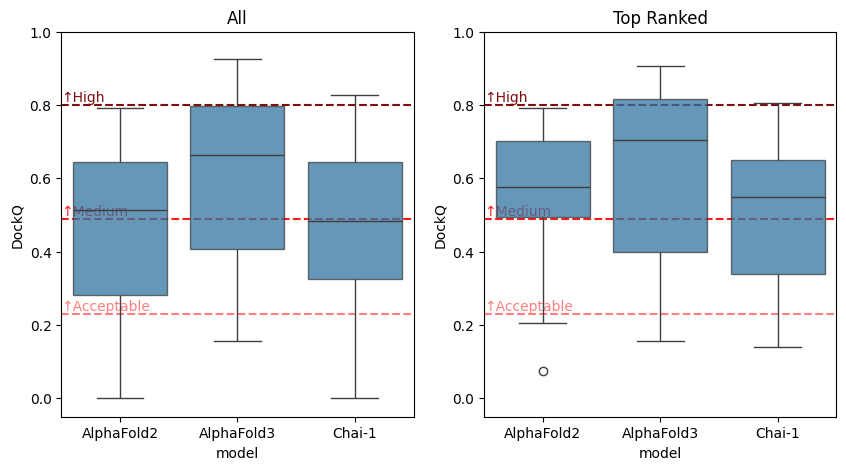
[36]:
sns.displot(dockq_scores_no_boltz, col='model', x='DockQ', kind='hist')
sns.displot(dockq_scores_no_boltz.query('top_rank'), col='model', x='DockQ', kind='hist')
[36]:
<seaborn.axisgrid.FacetGrid at 0x7c7cee63e190>
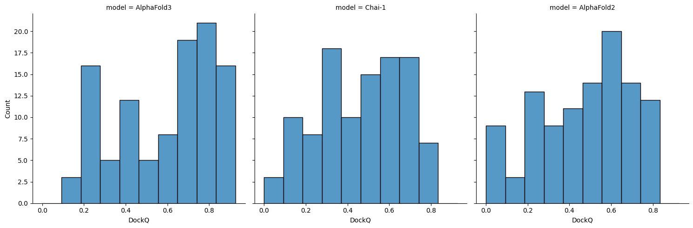
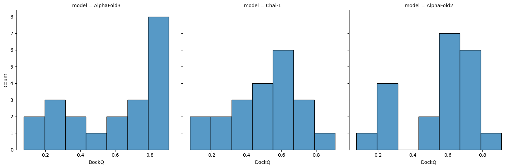
[37]:
for title, data in zip(
('All', 'Top Ranked'), (dockq_scores_no_boltz, dockq_scores_no_boltz.query('top_rank')), strict=True
):
print(title)
ipy_display.display(pg.kruskal(data, dv='DockQ', between='model'))
groups = list(data.groupby('model')['DockQ'])
significance_level = 0.05 / len(groups)
results = collections.defaultdict(list)
for (group1_name, group1), (group2_name, group2) in itertools.combinations(groups, 2):
stat, p_val = stats.ranksums(group1, group2, alternative='two-sided')
results['group1'].append(group1_name)
results['group2'].append(group2_name)
results['stat'].append(stat)
results['p_val'].append(p_val)
results['signficant'].append(p_val < significance_level)
ipy_display.display(pd.DataFrame(results))
print()
All
| Source | ddof1 | H | p-unc | |
|---|---|---|---|---|
| Kruskal | model | 2 | 21.381911 | 0.000023 |
| group1 | group2 | stat | p_val | signficant | |
|---|---|---|---|---|---|
| 0 | AlphaFold2 | AlphaFold3 | -3.821336 | 0.000133 | True |
| 1 | AlphaFold2 | Chai-1 | 0.281632 | 0.778226 | False |
| 2 | AlphaFold3 | Chai-1 | 4.164290 | 0.000031 | True |
Top Ranked
| Source | ddof1 | H | p-unc | |
|---|---|---|---|---|
| Kruskal | model | 2 | 2.473073 | 0.290388 |
| group1 | group2 | stat | p_val | signficant | |
|---|---|---|---|---|---|
| 0 | AlphaFold2 | AlphaFold3 | -1.094275 | 0.273835 | False |
| 1 | AlphaFold2 | Chai-1 | 0.716939 | 0.473412 | False |
| 2 | AlphaFold3 | Chai-1 | 1.421299 | 0.155230 | False |
[38]:
def plot_capri_classification(dockq_scores: pd.DataFrame, ax: Axes | None = None) -> Axes:
capri_classification = dockq_scores.groupby('model')['capri_classification'].value_counts(normalize=True) * 100
capri_classification.name = 'percent'
capri_classification = capri_classification.reset_index()
capri_classification = capri_classification.pivot_table(
index='model', columns='capri_classification', values='percent'
)
order = ['High', 'Medium', 'Acceptable', 'Incorrect']
colours = {
'High': '#7f0d0d',
'Medium': '#ff1a1a',
'Acceptable': '#ff7f7f',
'Incorrect': '#e6e6e6',
}
plot_ax = capri_classification.reindex(columns=order, fill_value=0).plot(
kind='bar',
stacked=True,
color=[colours[col_name] for col_name in order],
width=0.8,
edgecolor='none',
legend=False,
ax=ax,
)
plot_ax.set_ylim(0, 100)
plot_ax.yaxis.set_major_formatter(PercentFormatter(xmax=100))
plot_ax.set_ylabel('Success rate', fontsize=12)
plot_ax.set_yticks([0, 25, 50, 75, 100])
plot_ax.set_xlabel('')
return plot_ax
[ ]:
fig, axes = plt.subplots(1, 2, figsize=(10, 5), constrained_layout=True)
for ax, title, data in zip(
axes, ('All', 'Top Ranked'), (dockq_scores_no_boltz, dockq_scores_no_boltz.query('top_rank')), strict=True
):
ax.set_title(title)
plot_capri_classification(data, ax=ax)
handles, labels = axes[0].get_legend_handles_labels()
fig.legend(handles, labels, bbox_to_anchor=(1.15, 1))
plt.show()
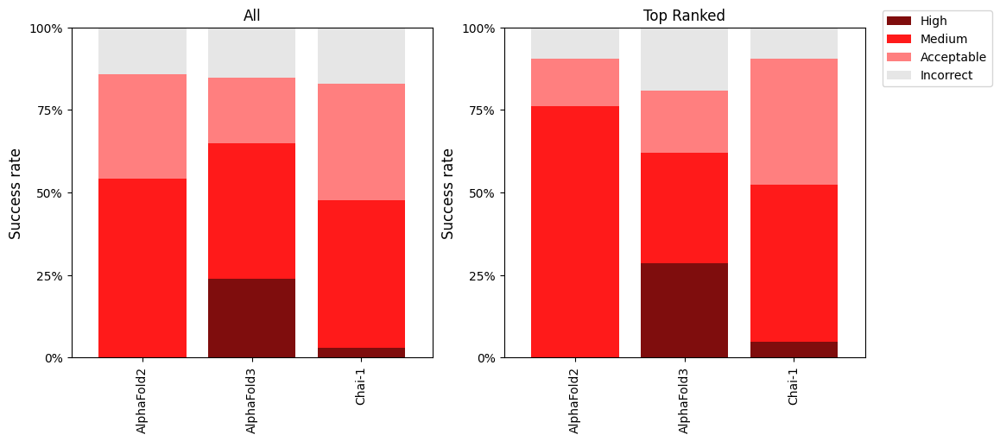
[40]:
dockq_scores_boltz_subset = dockq_scores[dockq_scores['pdb_id'].isin(['8shi', '8i5c', '8i5d'])]
[ ]:
fig, axes = plt.subplots(1, 2, figsize=(10, 5))
for ax, title, data in zip(
axes, ('All', 'Top Ranked'), (dockq_scores_boltz_subset, dockq_scores_boltz_subset.query('top_rank')), strict=True
):
ax.set_title(title)
for label, cutoff, colour in (
('↑Acceptable', CAPRI_ACCEPTABLE_CUTOFF, '#ff7f7f'),
('↑Medium', CAPRI_MEDIUM_CUTOFF, '#ff1a1a'),
('↑High', CAPRI_HIGH_CUTOFF, '#7f0d0d'),
):
ax.text(-0.5, cutoff + 0.01, label, color=colour)
ax.axhline(cutoff, linestyle='dashed', color=colour)
sns.boxplot(data.sort_values('model'), x='model', y='DockQ', ax=ax, zorder=3, boxprops={'alpha': 0.75})
ax.set_ylim(-0.05, 1.0)
plt.show()
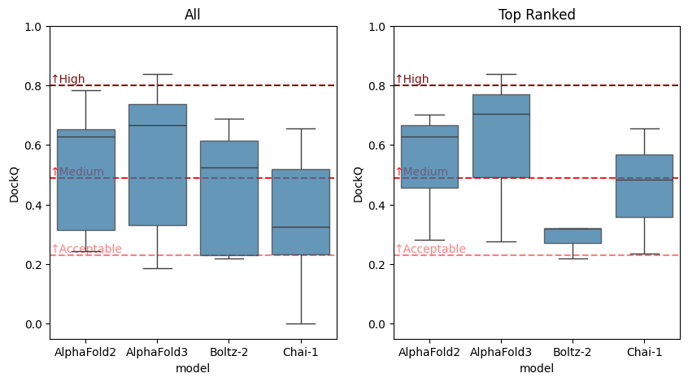
[42]:
sns.displot(dockq_scores_boltz_subset, col='model', x='DockQ', kind='hist')
sns.displot(dockq_scores_boltz_subset.query('top_rank'), col='model', x='DockQ', kind='hist')
[42]:
<seaborn.axisgrid.FacetGrid at 0x7c7cee52a410>
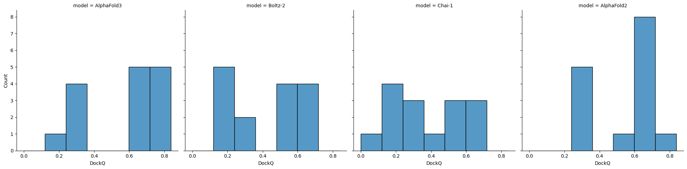
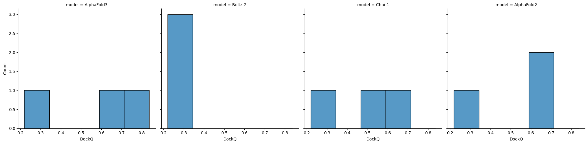
[43]:
for title, data in zip(
('All', 'Top Ranked'), (dockq_scores_boltz_subset, dockq_scores_boltz_subset.query('top_rank')), strict=True
):
print(title)
ipy_display.display(pg.kruskal(data, dv='DockQ', between='model'))
groups = list(data.groupby('model')['DockQ'])
significance_level = 0.05 / len(groups)
results = collections.defaultdict(list)
for (group1_name, group1), (group2_name, group2) in itertools.combinations(groups, 2):
stat, p_val = stats.ranksums(group1, group2, alternative='two-sided')
results['group1'].append(group1_name)
results['group2'].append(group2_name)
results['stat'].append(stat)
results['p_val'].append(p_val)
results['signficant'].append(p_val < significance_level)
ipy_display.display(pd.DataFrame(results))
print()
All
| Source | ddof1 | H | p-unc | |
|---|---|---|---|---|
| Kruskal | model | 3 | 12.020765 | 0.007312 |
| group1 | group2 | stat | p_val | signficant | |
|---|---|---|---|---|---|
| 0 | AlphaFold2 | AlphaFold3 | -1.472471 | 0.140894 | False |
| 1 | AlphaFold2 | Boltz-2 | 1.804296 | 0.071185 | False |
| 2 | AlphaFold2 | Chai-1 | 2.343511 | 0.019103 | False |
| 3 | AlphaFold3 | Boltz-2 | 2.302033 | 0.021333 | False |
| 4 | AlphaFold3 | Chai-1 | 2.716813 | 0.006591 | True |
| 5 | Boltz-2 | Chai-1 | 0.808822 | 0.418617 | False |
Top Ranked
| Source | ddof1 | H | p-unc | |
|---|---|---|---|---|
| Kruskal | model | 3 | 2.74359 | 0.43287 |
| group1 | group2 | stat | p_val | signficant | |
|---|---|---|---|---|---|
| 0 | AlphaFold2 | AlphaFold3 | -0.654654 | 0.512691 | False |
| 1 | AlphaFold2 | Boltz-2 | 1.091089 | 0.275234 | False |
| 2 | AlphaFold2 | Chai-1 | 0.654654 | 0.512691 | False |
| 3 | AlphaFold3 | Boltz-2 | 1.091089 | 0.275234 | False |
| 4 | AlphaFold3 | Chai-1 | 1.091089 | 0.275234 | False |
| 5 | Boltz-2 | Chai-1 | -1.091089 | 0.275234 | False |
[ ]:
fig, axes = plt.subplots(1, 2, figsize=(10, 5), constrained_layout=True)
for ax, title, data in zip(
axes, ('All', 'Top Ranked'), (dockq_scores_boltz_subset, dockq_scores_boltz_subset.query('top_rank')), strict=True
):
ax.set_title(title)
plot_capri_classification(data, ax=ax)
handles, labels = axes[0].get_legend_handles_labels()
fig.legend(handles, labels, bbox_to_anchor=(1.15, 1))
plt.show()
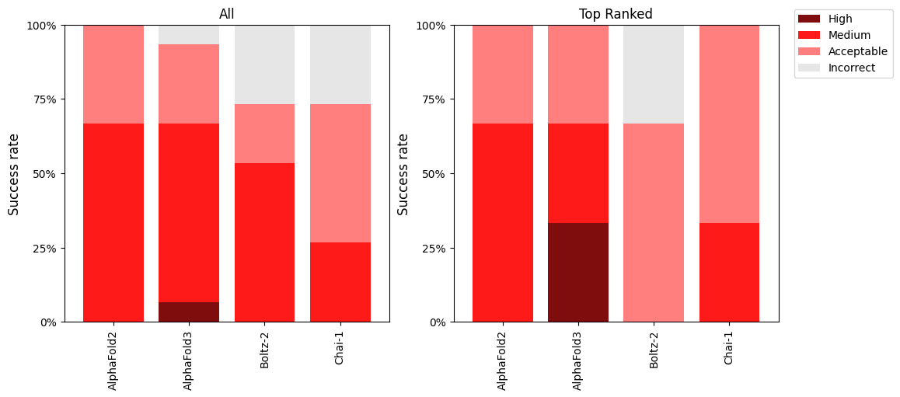